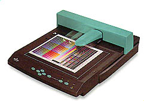

Alors les informaticiens créèrent avec l'aide de scientifiques des outils de calcul standards pour les intégrer aux systèmes d'exploitations des ordinateurs : Les CMS (Color Managment système).
Le CMS est chargé de faire toutes les transformations d'un espace colorimétrique a un autre.
C'est donc un calculateur qui a besoin pour faire son travail de données caractérisant
le périphérique couleur ainsi que, bien sur, des images qui seront transformées.Les données concernant le périphérique, sont très spécifiques et consistent en une véritable cartographie de sa réponse colorimétrique.
Aux outils de calcul succèdent donc des outils de mesures, en l'occurence, le spectrophotomètre.

Ce spectrophotomètre a prisme est monté sur sur une table XY.(Piloté par un PC)
Le quadrillage multicolore posé dessus, produit par le procédé d'impression à caractériser va être mesuré.C'est ce que l'on appelle une charte d'impression.
La charte est un fichier image dont on connaît les valeurs CMJN de pixels (Plus part des imprimantes).L'appareil va permettre de fournir, pour chaque carré de couleur, une mesure exprimée en coordonnées "Lab". Cette valeur Lab est l'expression de la couleur telle que perçue par l'oeil humain sous un éclairage défini normalisé.
A la fin de la mesure, un fichier texte est produit associant chaque valeur CMJN à une valeur LAB.Ces données seront ensuite corrélées et extrapolées pour générer une table 3D hautement définie.
Cette table et certaines informations sur la façon dont elle a été obtenue seront ensuite encapsulées dans un fichier au format ICC (International Color Consortium).
Le profil ICC peut alors être utilisé par le CMS, et de là, par tout applications compatibles.Le même principe de caractérisation de périphérique est applicable pour les scanners et les écrans.
Aller au CV